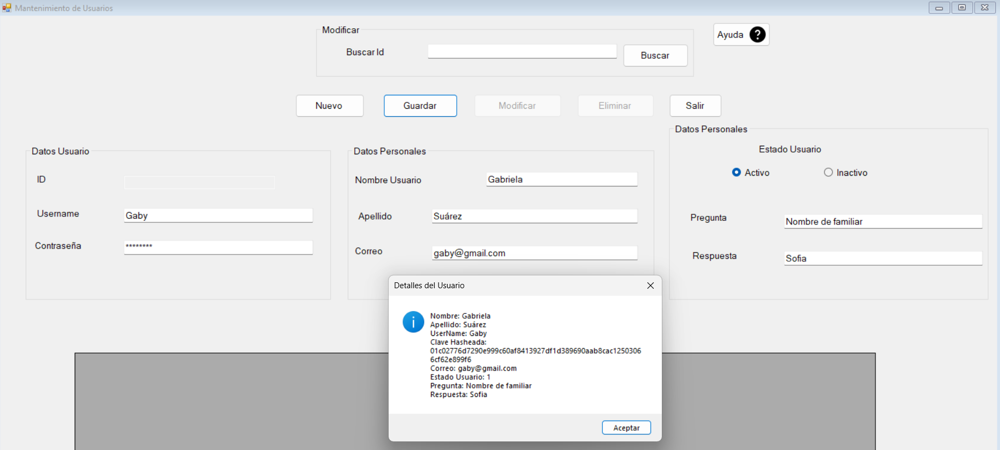

Para entrar al formulario dar clic en la pestaña Mantenimientos, seguido la opción Usuarios.

El formulario consta de los botones Nuevo, Guardar, Modificar, Eliminar, Salir y Buscar.

Para crear un nuevo Usuario, se debe dar clic en el boton Nuevo, luego llenar todos los campos, y por último dar clic en el boton Guardar, y el usuario se ha creado.
Para modificar un Usuario, lo primero es ingresar el ID del Usuario y dar clic en el botón Buscar. Si el usuario existe se mostrarán los datos del mismo en una tabla en la ventana actual.

En seguida, modificar los datos que se deseen, haciendo uso de los campos de texto.
* Observación: siempre seleccionar el estado del usuario.
Luego oprimir el botón Modificar, de esta manera, los datos han sido modificados.

Ejemplo de datos modificados:

Para eliminar un Usuario, lo primero es ingresar el ID del Usuario y dar clic en el botón Buscar. Si el usuario existe se mostrarán los datos del mismo en una tabla en la ventana actual. Después, oprimir el botón Eliminar, de esta forma el usuario ha sido eliminado, y se muestra un mensaje para notificarlo.

El boton salir cerrará el formulario de Usuarios.